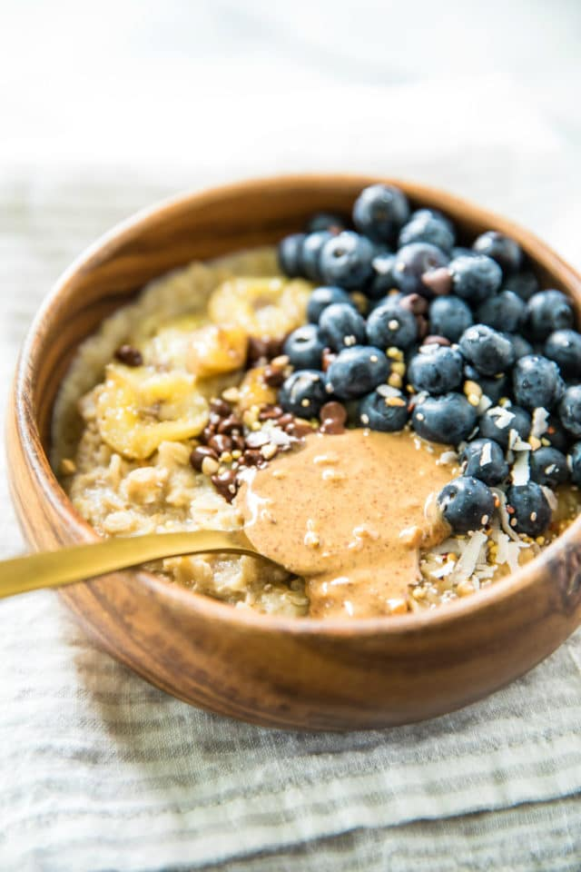

Oatmeal

Description
Make a healthy chocolate breakfast in just 7 minutes! This Chocolate Oatmeal will satisfy your cravings, and keep you full for hours. Sweetened with banana it's easy to make vegan & gluten-free.
Ingredients
- 100g Oats
- 200g Milk
- 1 Banana
- 15g Dark Chocolate Chunks
- 30g Blueberries
- 1Tbps Peanut Butter
Steps
- Start heating the milk, and let it sit to just before it starts to boil
- In a bowl, mash the banana and add the oats
- Pour the milk in the bowl and mix well
- Add the toppings and enjoy your delicious breakfast